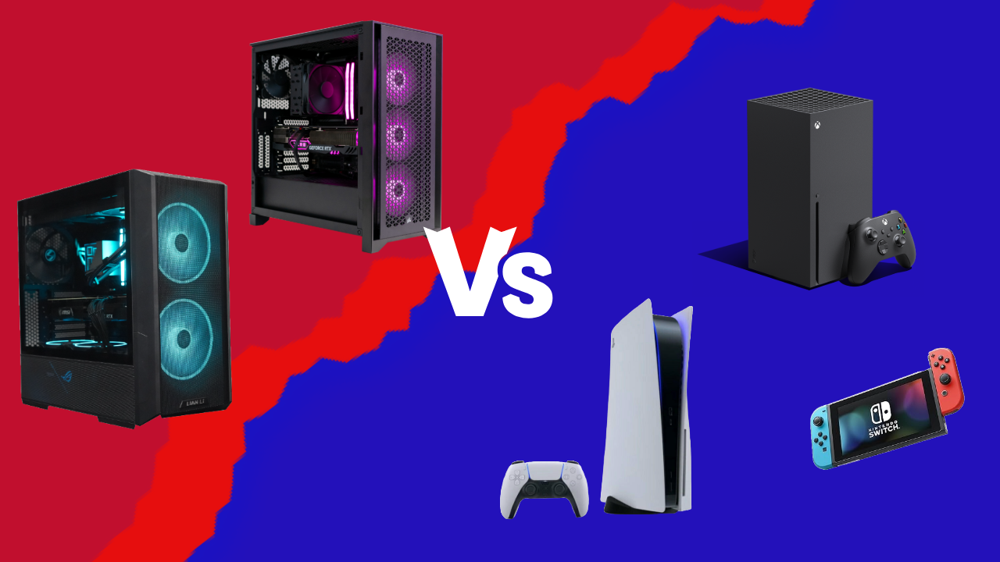
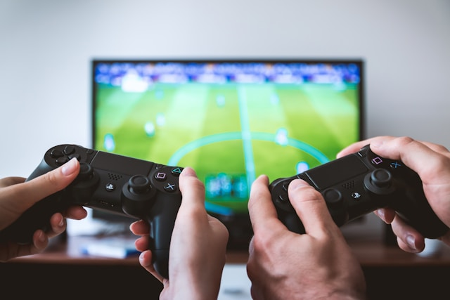
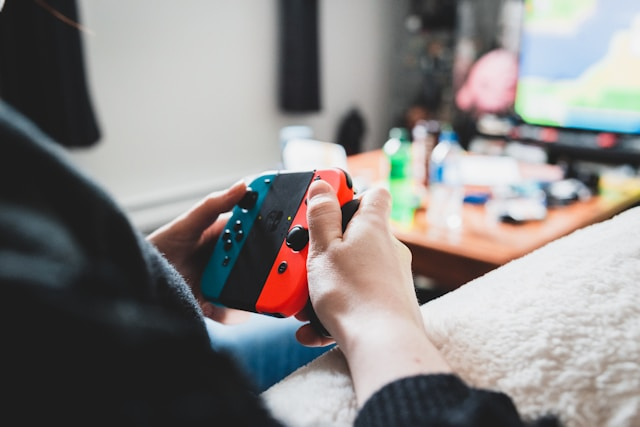
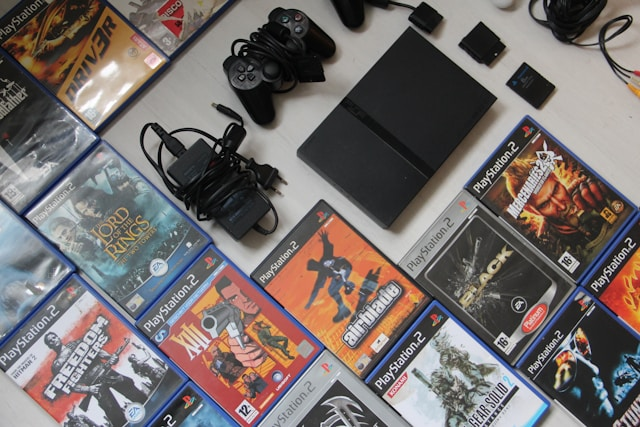

Console VS. PC

In the gaming world, one of the most frequently debated topics is that of consoles versus PCs. The machine on which someone chooses to play a video game is something that many gamers feel very strongly about because there are many pros and cons to both sides.
Why console is better:
I personally prefer playing games on a console and believe that consoles are superior to PCs for the following reasons:
- Convenience
- Affordability
- Access to physical games

Convenience
Consoles provide a much simpler user experience than PCs because they are focused primarily on gaming, compared to PCs which are focused on all types of computing. On a console, your owned games are immediately available to you from the system startup, compared to on PC where most games are housed on apps like Steam or EA. Game publishers are starting to follow Steam’s footsteps and release their own launcher apps for their own games which can make it even more confusing for users when the games they have bought aren’t all accessible from the same space.
Consoles are also much more user friendly because they don’t require extensive knowledge of the machine’s hardware much like a PC would. Most of the time, the only thing a console gamer has to concern themself with is storage and resolution, where a PC gamer in order to maximize their gaming experience would require knowledge of their system’s processors, RAM, GHz, HDDs/SSDs, Graphics cards, and the list goes on, especially if they built their PC themself which is in itself a massive commitment of time and money. With consoles you can simply take it out of the box, plug it in, and start playing.

Affordability
Console gaming is also a significantly less expensive investment compared to PC. A top-of-the-line console in 2025 like a Playstation 5 or Xbox Series X brand new and at its most expensive would cost somewhere from $700-$800, which includes a controller and everything that you would need in order to use the system. Meanwhile, for the same amount of money, you would only be able to buy a decent PC with slightly worse specs, not including the additional cost of necessary peripherals like a monitor, mouse, and keyboard.

Access to physical games
Another important aspect of console gaming that the PC completely neglects is physical games. As technology advances and games become increasingly larger in terms of file sizes, it has become more common for them to only be released digitally, especially for smaller indie games. When only owning a game digitally though, you lose the ability to fully own your own copy of a game and control when you update it. It’s also not possible to re-sell or share a game you finished playing with a friend if the game only exists in a digital space. In the past, digital copies of games also used to take up more system storage than physical ones because with physical copies, part of the game itself was stored on the disc or cartridge. PC gaming completely removes the option to buy your games physically which can be a very important thing to many gamers.
Why choose PC?

Relevant in All Modern Technologies and Fields


Today's technology is increasingly advancing and the basic understanding of how to use a computer is a fundamental essential for one's life. Here are some reasons why PC is relevant and more expansive than console:
- Straight forward;easy to pick up and understand the functions of a keyboard and mouse
- Used in any industry such as design, programming, etc.
- Easy access to internet, online resources, and bountiful of softwares and tools
- Flexible and easy to transfer data physically (latop or hard drives) and digitally (GoogleDrive and OneDrive)
Main Platform for Gaming

PC platform is growing larger every day. It is the biggest gaming platform for gamers and main platform fo game developers and companies. These can range from triple A studios to small indie developers.
It's accessible for everyone who enjoys gaming and want a wide community. Here are some reasons why playing on the PC platform can be a better exeperience:
- Wide variety of controls that provide different experiences
- More open communication and news updates for both games and other aspects of life
- Mouse and keyboard provides better precision
- Way more sales and access to variety of games new and old. Emulators can grant access to console games!
- Although you could mod on console, it is super limited to PC modding and some consoles do no allow or support mods/mod creations. PC modding is much easier and have so much more freedom to explore creatively.
Wide in Customization and Builds

Upgrades people, upgrades! Although PCs can be a higher average cost, it is a good investment that can last and provide a powerhouse for more heavy programs, such as Adobe Suite. There is more wide access to repairs, tutorials, and switching out parts.
Besides more professionals in its expertise, here are some reasons that computers are more customizable and fits your needs:
- Longevity, upgradable and interchangable of products. Parts of a computer can be easily replaceable, or if a part breaks it only needs that part to be fixed. Can mix and match products depending what you want brand-wise or your functionality (such as gaming focused or better optimization)
- With browsers or multiple monitors, can easily multitask and add more than just basic parts (such as video cameras, standalone mics, etc.)
- More powerful = more complex graphics and better performance
- Aesthetics;if choosing to build, can be personalized more and do cool setups (how many monitors is too much monitors?)
So Why Not Choose PC?
the PC platform, or widely known as utilizing computers, can be good for anyone, whether they want to game, work, or search up anything in only a few seconds.